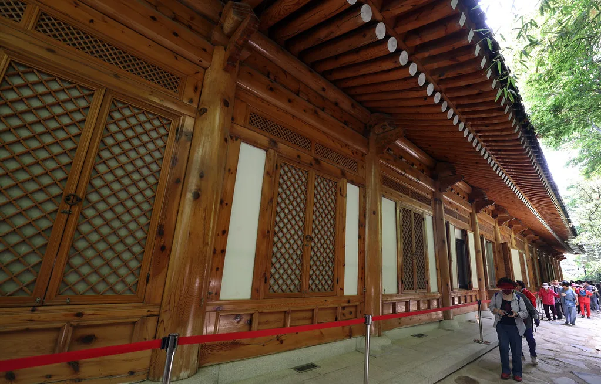
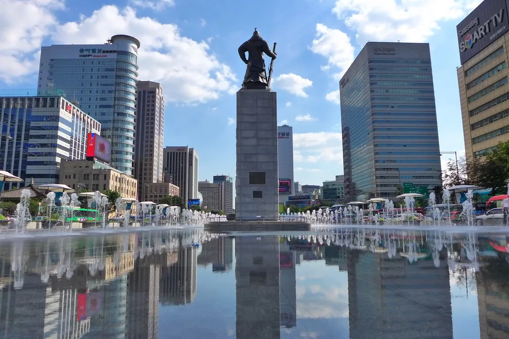

이재명 대통령이 국가정보원장과 외교·통일·행정안전·문화체육관광부 장관을 한꺼번에 교체하는 중폭 개각을 단행했다. 청와대는 지난 23일 강금실 전 법무부 장관을 국정원장 후보자로 지명하고, 네 개 부처 장관 후보자도 함께 발표했다. 최교진 교육부 장관의 사의를 받아들인 지 하루 만에 나온 인사로, 집권 중반기를 앞두고 외교·안보 라인과 내각 일부를 정비하려는 뜻으로 풀이된다.
가장 눈길을 끄는 인선은 국정원장이다. 강 후보자가 국회 인사청문 절차를 거쳐 임명되면 국정원 창설 이후 첫 여성 수장이 된다. 강 후보자는 노무현 정부 시절 첫 여성 법무부 장관을 지낸 법조인 출신으로, 사법·인권 분야에서 목소리를 내 온 인물이다. 2006년 서울시장 선거에 출마하는 등 정치권과도 인연을 이어 왔다. 청와대는 정보기관의 정치적 중립과 개혁 과제를 이끌 적임자라는 취지로 설명한 것으로 전해졌다.

다만 정보·방첩 분야 실무 경력이 없다는 점은 청문회의 핵심 쟁점이 될 전망이다. 대북 정보 수집과 해외 방첩, 산업기술 유출 대응 등 국정원 고유 업무의 전문성을 어떻게 보완할지가 집중적으로 검증될 가능성이 크다. 파격적인 인사라는 평가와 함께, 조직 장악력과 안보 위기 대응 능력을 따져봐야 한다는 신중론도 동시에 나온다.
외교부 장관 후보자로는 임웅순 국가안보실 제2차장이 지명됐다. 대미 외교 경험이 풍부한 직업 외교관 출신이라는 점에서 한미 현안을 안정적으로 관리하려는 포석으로 해석된다. 통일부 장관 후보자에는 홍익표 전 청와대 정무수석이 이름을 올렸다. 국회 외교통일위원회에서 활동했고 더불어민주당 원내대표를 지낸 중진으로, 대북 정책과 국회 협치를 함께 염두에 둔 인선이라는 분석이 나온다.
행정안전부 장관 후보자로는 한준호 민주당 의원이, 문화체육관광부 장관 후보자로는 강유정 청와대 수석대변인이 각각 지명됐다. 현역 의원과 대통령실 핵심 참모가 나란히 내각에 들어가면서 국정 운영의 속도와 장악력을 높이려는 의도가 반영됐다는 평가다. 정무 감각을 중시한 인선이라는 해석이 나오는 한편, 측근 중심 인사라는 야권의 비판도 예상된다. 청와대는 이번 개각과 관계없이 한미동맹과 한반도 평화 기조는 그대로 이어간다고 강조했다.

관심을 모았던 교육부 장관 후임은 이번 명단에 포함되지 않았다. 최 전 장관은 수능 관리 혼선의 책임을 지고 22일 물러났으며, 청와대는 후임 인선에 속도를 내겠다는 입장을 밝혔다. 정치권에서는 내년도 예산안 처리 이후 추가 인사가 순차적으로 이어질 수 있다는 관측도 나온다. 수능 성적 통지와 정시 모집을 앞둔 시점이라 교육 수장 공백이 길어지면 부담이 커질 수 있다는 우려도 적지 않다.
이제 공은 국회로 넘어간다. 국정원장 후보자는 인사청문회를 거쳐야 하고, 장관 후보자들도 청문 절차를 밟는다. 여야는 후보자들의 전문성과 도덕성, 정책 방향을 두고 치열한 공방을 벌일 것으로 보인다. 이번 인선이 외교·안보 정책의 연속성과 내각 쇄신이라는 두 가지 목표를 함께 달성할 수 있을지, 청문회 과정에서 어떤 평가가 나올지 주목된다. 청문회 결과에 따라 앞으로 이어질 추가 개각의 폭과 방향도 가늠해 볼 수 있을 전망이다.